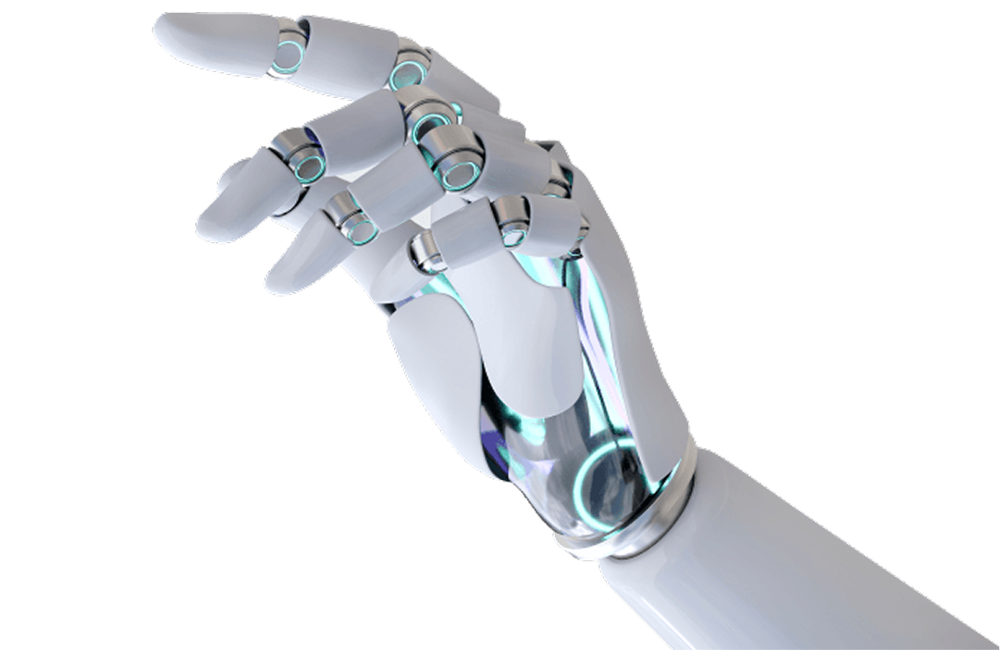

<section class="mt-[128px] relative">
    <div class="container">
        <div class="bg-gray rounded-[48px] px-14 py-[60px] relative">
            <div class="max-w-[840px]">
                <h2 class="title-1 !text-[28px]">Внедряем ИИ-технологии в коммуникации</h2>
                <p class="mt-6 text-[20px] leading-normal">
                    AI-консьерж это полноценный голосовой интерфейс взаимодействия с&nbsp; <br />
                    собственником который станет стандартом. Дом &laquo;говорит&raquo; и &laquo;заботится&raquo;.
                </p>
                <button class="btn btn-primary btn-s-default mt-[76px]" data-graph-path="create-bid" data-graph-animation="fadeInUp" data-graph-speed="350">Оставить заявку</button>
            </div>
            <picture>
                <source srcset="../../img/robot-hand.webp" type="image/webp" />
                
            </picture>
        </div>
    </div>
</section>
